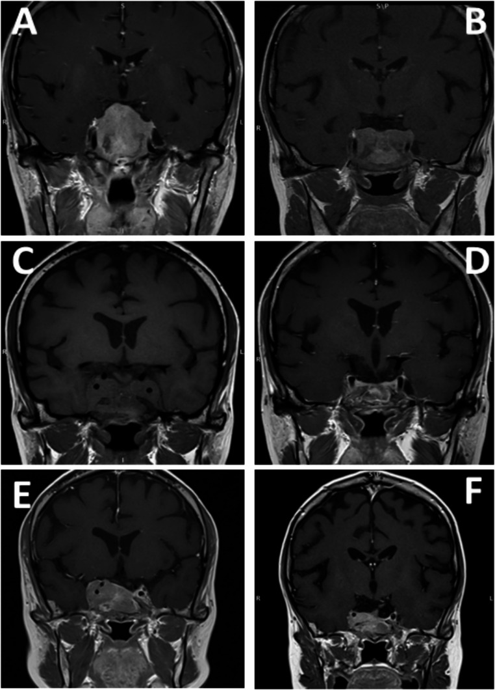
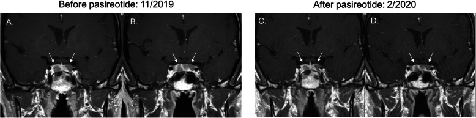
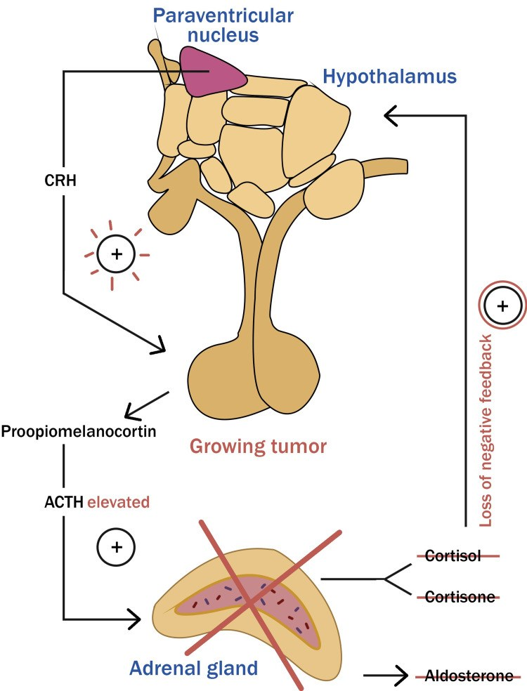

1862 — Hội chứng Nelson: cortisol xuống nhưng ACTH và u yên vẫn LỚN DẦN — đọc MRI thế nào và chặn tiến triển bằng gì
Tags: pattern:cushing pattern:tai-phat pattern:macroadenoma-tuyen-yen pattern:xam-lan-xoang-hang vung:tuyen-yen vung:ho-yen anatomy:xoang-hang protocol:MRI-3T-dong-hoc score:ACTH score:Knosp
Mức chắc chắn (certainty): tổng hợp y văn (literature synthesis) — ghép phân tích gộp 37 nghiên cứu / 1.316 bệnh nhân (Pituitary 2021, PMCID PMC8416875, CC BY 4.0), đoàn hệ 30 bệnh nhân Cushing sau cắt thượng thận hai bên (Pituitary 2025, PMCID PMC12474698, CC BY 4.0), tổng quan cách xử trí Nelson (Medicina 2022, PMCID PMC9697743, CC BY 4.0), tổng quan tự sự (Cureus 2023, PMCID PMC10272858, CC BY 4.0) và ca Nelson đáp ứng pasireotide ở người chưa xạ (Clin Diabetes Endocrinol 2020, PMCID PMC7648374, CC BY 4.0). Không có ca do nhóm tự chụp.
Kịch bản thực hành (ghép từ các đoàn hệ dưới đây, không phải ca nguyên văn): nữ 34 tuổi, Cushing do u tuyến yên đã cắt thượng thận hai bên cách đây 5 năm vì mổ xuyên bướm không lui bệnh; nay da sạm đen rõ, ACTH 480 ng/L, MRI hố yên thấy nốt 9 mm ở tuyến yên (trước mổ không thấy u). Câu hỏi: có phải Nelson không, theo dõi bằng gì, và nên mổ, xạ hay uống thuốc? Bài chốt ba quyết định: (1) chẩn đoán Nelson hiện đại = BẰNG CHỨNG HÌNH ẢNH u tiến triển sau cắt thượng thận (tăng ≥ 2 mm kèm lệch cuống yên/vồng hoành yên/bất đối xứng sàn yên) — sạm da và ACTH tăng chỉ là tiêu chuẩn phụ; (2) tỉ lệ gộp 26% (95% CI 22–31%), trung vị 4 năm sau mổ, có ca 39 năm → theo dõi MRI + ACTH không có điểm dừng; (3) u tiến triển → mổ xuyên bướm trước, xạ phẫu khi không mổ được/hết đường mổ, hóa trị temozolomide cho u xâm lấn–kháng trị; xạ TRƯỚC khi cắt thượng thận KHÔNG chứng minh giảm Nelson (RR 0,9). Nối 1696 – Bệnh Cushing do u tuyến yên, 1748 – Cushing tái phát sau mổ xuyên bướm, 1709 – ACTH lạc chỗ, 1752 – Suy tuyến yên sau xạ sọ.
1. Tổng quan bệnh học – cơ chế hình ảnh: vì sao cắt nguồn cortisol lại làm u yên LỚN
- Định nghĩa và lịch sử: Nelson được mô tả năm 1958 ở một nữ 33 tuổi sau cắt thượng thận hai bên, với tam chứng: u tuyến yên tiến triển, ACTH cao, sạm da (PMC10272858). Từ 2021, đồng thuận chuyên gia đổi tên thành "tiến triển u corticotroph sau cắt thượng thận hai bên" (CTP-BADX/NS) và đặt hình ảnh học làm tiêu chuẩn chính (PMC12474698, PMC9697743).
- Sinh lý bệnh (pathophysiology): cắt cả hai thượng thận loại bỏ cortisol — mất phản hồi âm lên vùng dưới đồi–tuyến yên → CRH và ACTH tăng, đồng thời POMC được cắt thành ACTH và α-MSH. α-MSH kích thích thụ thể MC1R ở tế bào hắc tố → sạm da (PMC10272858). ACTH cao kéo dài lại là yếu tố nuôi dưỡng tế bào corticotroph còn sót → phì đại rồi tăng sinh, cuối cùng thành macroadenoma xâm lấn.
- Tần suất (prevalence) — con số phải nhớ: gộp 37 nghiên cứu, 1.316 bệnh nhân, tỉ lệ Nelson 26% (95% CI 22–31%); khi chỉ tính các nghiên cứu có MRI lúc chẩn đoán và theo dõi, tỉ lệ lên 38% (95% CI 27–50%; 7 nghiên cứu, 280 bệnh nhân); dao động giữa các nghiên cứu 4–60% (PMC8416875). Đoàn hệ 30 bệnh nhân gần đây: 9/30 (30%), trung vị 60 tháng sau cắt thượng thận (PMC12474698).
- Thời điểm (timing): trung vị 4 năm sau cắt thượng thận, sớm nhất 2 tháng, muộn nhất 39 năm (PMC8416875) — nghĩa là không được ngừng theo dõi sau 5 năm.
- Triệu chứng (symptoms): sạm da 82% (155/188), chèn ép giao thoa thị giác 19% (24/129) (PMC8416875); tổng quan khác ghi nhận suy giảm thị lực 10–57% ở u lớn (PMC10272858). Đau đầu, suy tuyến yên, liệt dây III–VI khi xâm lấn xoang hang.
- TẠI SAO ACTH tăng trước khi thấy u: tế bào corticotroph còn sót tăng tiết trước, tăng sinh sau; MRI chỉ thấy khi khối ≥ 2–3 mm. Vì vậy ACTH tăng đơn thuần là tiêu chuẩn phụ, còn u mới xuất hiện/tiến triển mới là tiêu chuẩn chính (PMC9697743).
- TẠI SAO u Nelson ngấm thuốc "chậm": adenoma corticotroph thường giảm tín hiệu trên T2 và ngấm thuốc chậm hơn nhu mô tuyến bình thường, nên trên T1 động học u hiện ra như ổ ngấm thuốc MUỘN ở đáy hố yên/cuống yên; đây là lý do phải dùng MRI 3T động học khi MRI thường quy âm tính (PMC13616001, trình bày chi tiết ở 1748).
- TẠI SAO có ca "ác tính": một số u Nelson xâm lấn xoang hang, clivus, xoang bướm, Ki-67 cao, tiến triển dù đã mổ + xạ; hiếm nhưng có thể di căn xa (pituitary carcinoma). Ca trong PMC12474698 cho thấy u 45 × 28 × 21 mm, sau temozolomide + pasireotide co còn 30 × 16 × 13 mm, rồi tái tiến triển xâm lấn clivus và xoang hang phải sau khi ngừng thuốc 12 tháng.
2. Mẫu hình + chẩn đoán phân biệt theo vị trí (gamut)
- Mẫu hình chính: sau cắt thượng thận hai bên, trên MRI nốt mới hoặc khối cũ lớn thêm ≥ 2 mm, thường ở đáy hố yên hoặc thành trong xoang hang, giảm tín hiệu T2, ngấm thuốc muộn; u lớn gây vồng hoành yên, lệch cuống yên, bất đối xứng sàn yên, chèn giao thoa, xâm lấn xoang hang (Knosp 3–4).
- Gamut theo vị trí:
- Trong hố yên, < 10 mm: microadenoma — dễ bỏ sót nếu không có MRI động học; thường chỉ ACTH tăng + sạm da.
- Trên yên (suprasellar): chèn giao thoa → bán manh hai bên, giảm thị lực; u có thể chèn sàn não thất ba gây não úng thủy.
- Xoang hang (Knosp 3–4): xâm lấn thành trong → liệt III/IV/V1–V2, bao quanh động mạch cảnh trong nhưng hiếm khi gây hẹp; là vị trí hay sót khi mổ.
- Dưới yên/clivus/xoang bướm: u xâm lấn phá xương, chảy máu, rò dịch não tủy sau mổ; ca PMC12474698 có hẹp nhẹ siphon cảnh khi u tiến triển.
- Gamut chẩn đoán phân biệt "khối hố yên ở người đã cắt thượng thận":
- CTP-BADX/NS — u corticotroph tiến triển, ACTH cao, sạm da.
- Mô tuyến yên còn lại phì đại (pituitary hyperplasia) — đồng đều, không có nốt, không xâm lấn; ACTH có thể cao.
- U tuyến yên không chức năng còn sót — không ACTH cao, không sạm da; nhưng có thể lớn lên.
- Thay đổi sau xạ/mô sẹo — ngấm thuốc màng, teo tuyến, không lớn dần; phân biệt bằng chuỗi MRI.
- Craniopharyngioma — nang + vôi hóa, ngấm thuốc viền, thường dưới yên/trên yên.
- U màng não/sarcoid/lymphoma/hypophysitis — dày cuống, ngấm thuốc lan tỏa; bối cảnh viêm/hệ thống.
- Di căn hố yên — tiền sử ung thư, phá xương nhanh, đái tháo nhạt sớm.
3. Bảng so sánh phân biệt (ma trận đối chiếu)
| Thực thể (entity) | Hình ảnh điển hình (MRI 3T) | Chốt vào (rule-in) | Chốt loại (rule-out) | Gợi ý xác nhận |
|---|---|---|---|---|
| CTP-BADX/NS | Nốt mới/lớn thêm ≥ 2 mm, đáy hố yên/thành trong xoang hang, T2 giảm, ngấm muộn trên T1 động học | Tiền sử cắt thượng thận hai bên + u tiến triển trên chuỗi MRI + ACTH tăng | MRI ổn định ≥ 2 năm + ACTH không tăng → chưa chẩn đoán | MRI 3T động học, ACTH nền, so phim cũ |
| Phì đại tuyến yên sau cắt thượng thận | Tuyến to đồng đều, không nốt, không xâm lấn, cuống giữa | Tuyến to lan tỏa + không có nốt + ACTH cao có hồi phục theo thời gian | Có nốt khu trú/lệch cuống → nghĩ adenoma | MRI 3–6 tháng, theo dõi |
| U không chức năng còn sót | Khối cũ không đổi, không sạm da, ACTH bình thường | ACTH bình thường + không sạm da | ACTH tăng dần + da sạm → Nelson | ACTH, sắc tố da, chuỗi MRI |
| Thay đổi sau xạ | Ngấm thuốc màng/xơ, teo tuyến, không lớn dần | Bất biến ≥ 12 tháng sau xạ | Khối lớn thêm > 2 mm → tái phát/Nelson | So sánh cùng chuỗi, DWI, PET khi cần |
| Craniopharyngioma | Nang, vôi hóa, ngấm viền, thường trên yên | Vôi hóa + nang + không có ACTH cao | U đặc ngấm đồng nhất + ACTH cao → adenoma | CT xương, MRI T1/T2 |
| Viêm tuyến yên/hypophysitis | Cuống dày, ngấm thuốc lan tỏa, tuyến to đối xứng | Cuống dày + bối cảnh viêm/thuốc miễn dịch | Nốt khu trú + không viêm → u | IgG4, PRL, MRI theo dõi |
| Di căn hố yên | Phá xương, đái tháo nhạt sớm, lớn nhanh | Tiền sử ung thư + phá xương + DI sớm | U trong yên, không phá xương → adenoma | CT xương, PET-CT, sinh thiết |

Sáu mốc của cùng một bệnh nhân: A u lớn sau cắt thượng thận trước mổ; B sau mổ lấy bớt; C tái phát 12 tháng sau mổ; D co nhỏ sau temozolomide + pasireotide; E tiến triển lại sau ngừng temozolomide 12 tháng, xâm lấn clivus và xoang hang phải, bắt đầu hẹp siphon cảnh; F co lại sau đợt temozolomide thứ hai + xạ phẫu. Nguồn: Pituitary 2025, PMC12474698, Fig. 3 — CC BY 4.0.4. Protocol chụp + tiêu chuẩn chẩn đoán + thuật toán điều trị
Chẩn đoán (theo đồng thuận 2021 và Barber):
- Tiêu chuẩn chính: bằng chứng hình ảnh u tiến triển sau cắt thượng thận, định nghĩa là tăng ≥ 2 mm ở một chiều kèm ít nhất một trong ba dấu: lệch cuống yên, vồng lên của hoành yên, bất đối xứng sàn yên (PMC12474698). Hoặc u mới xuất hiện ở người trước đó không thấy u.
- Tiêu chuẩn phụ: ACTH > 500 ng/L trong một mẫu 08:00 trước dùng corticoid, hoặc ACTH tăng dần qua ≥ 3 lần; sạm da (PMC10272858, PMC9697743). ACTH không tương quan với mức sạm da.
- ACTH 2 năm sau cắt thượng thận là yếu tố dự báo: 458 ng/L (IQR 245–723) ở nhóm Nelson so với 146 ng/L (61–247) ở nhóm không Nelson, p = 0,020; dùng fludrocortisone thấp hơn (0,05 vs 0,1 mg/ngày, p = 0,001) và hydrocortisone thấp hơn (20 vs 30 mg/ngày, p = 0,06) (PMC12474698).
Protocol MRI:
- Máy 3T, T1 động học sau tiêm 0,1 mmol/kg gadolinium, 8–10 thì, lát 2–3 mm; T2 coronal; T1 sau tiêm muộn fat-sat; đánh giá thành trong xoang hang, cuống yên, đáy hố yên (PMC13616001). So cùng chuỗi xung, cùng máy với phim trước cắt thượng thận.
- Lịch theo dõi: MRI + ACTH 6–12 tháng/lần trong 5 năm đầu (trung vị xuất hiện 4 năm), sau đó 1–2 năm/lần kéo dài vì có ca 39 năm; bất kỳ sạm da mới/tăng hoặc triệu chứng thị giác → chụp ngay.
Điều trị (thuật toán):
- Theo dõi u nhỏ, không chèn ép, ACTH tăng nhẹ — nhưng theo dõi sát vì có thể tiến triển nhanh.
- Mổ xuyên bướm (TSS) là lựa chọn đầu tay khi u còn tiếp cận được: trong đoàn hệ 30 ca, 5/9 (56%) phải mổ lại; 78% (7/9) cần xạ phẫu/xạ trị (PMC12474698).
- Xạ phẫu (SRS)/xạ trị phân liều khi u xâm lấn xoang hang, mổ không hết, hoặc bệnh nhân không mổ được. Loạt nhỏ: tiến triển sau SRS 16,7% (2/12); kiểm soát 5/5, 0/5, 0/3 ở các loạt khác — chọn lọc bệnh nhân làm kết quả khó so sánh (PMC9697743). Biến chứng cần tư vấn: suy tuyến yên (xem 1752).
- Nội khoa: cabergoline, pasireotide (đồng vận somatostatin, ưu thế SSTR5); ca 24 tuổi sau 3 lần mổ + cắt thượng thận có ACTH 5.935 pg/mL, hai u 14 mm và 7 mm, giảm còn 609 pg/mL sau 2 tháng pasireotide (PMC7648374). Chưa có thuốc nào chứng minh hiệu quả nhất quán (PMC9697743).
- Temozolomide cho u xâm lấn/kháng trị: 200 mg/m²/ngày × 5 ngày, mỗi 28 ngày; ca PMC12474698 co u từ 45 × 28 × 21 mm xuống 30 × 16 × 13 mm, nhưng độc tính tủy buộc giảm liều/ngừng, và u tiến triển lại sau 12 tháng — cần đợt hai ± SRS.
- Phòng ngừa khi cắt thượng thận: xạ tuyến yên trước cắt KHÔNG chứng minh giảm Nelson — RR 0,9 (95% CI 0,5–1,6; 10 nghiên cứu, 564 bệnh nhân); xạ dự phòng gộp RR 0,8 (0,5–1,5); mổ tuyến yên trước đó RR 0,6 (0,4–1,0) (PMC8416875). Trong đoàn hệ 30 ca, SRS trước cắt thượng thận gặp 52% ở nhóm không Nelson so với 22% ở nhóm Nelson (p = 0,11) — giả thuyết, chưa đủ để khuyến cáo thường quy (PMC12474698).
flowchart TD
A[Đã cắt thượng thận hai bên vì Cushing] --> B[MRI hố yên + ACTH: 6–12 tháng, rồi 1–2 năm]
B --> C{U mới hoặc tăng ≥ 2 mm + dấu cuống/hoành/sàn yên?}
C -->|Không| B
C -->|Có| D[Chẩn đoán CTP-BADX/NS]
D --> E{U nhỏ, không chèn ép?}
E -->|Có| F[Theo dõi sát 3–6 tháng]
E -->|Không| G{U còn tiếp cận được?}
G -->|Có| H[Mổ xuyên bướm]
G -->|Không| I[Xạ phẫu / xạ phân liều]
H --> J{Còn tiến triển?}
I --> J
J -->|Có| K[Nội khoa: cabergoline / pasireotide]
J -->|Không| L[Theo dõi MRI + ACTH]
K --> M{U xâm lấn, kháng trị?}
M -->|Có| N[Temozolomide 200 mg/m² × 5 ngày/28 ngày ± SRS]
M -->|Không| L
5. Biến thể bình thường và cạm bẫy
- Biến thể bình thường: sau cắt thượng thận, tuyến yên có thể to lan tỏa do phì đại tế bào corticotroph — không phải u; chỉ gọi Nelson khi có nốt khu trú/lớn dần kèm dấu lệch cấu trúc. Mô sẹo sau mổ ngấm thuốc ở màng và không lớn dần.
- Cạm bẫy 1 — "trước mổ không thấy u, sao bây giờ lại có?": 22% bệnh nhân trong đoàn hệ có MRI trước cắt thượng thận âm tính, vẫn phát triển u Nelson (PMC12474698). Không thấy u trước mổ không loại trừ Nelson.
- Cạm bẫy 2 — chỉ dựa vào ACTH: ACTH tăng đơn thuần không đủ chẩn đoán theo đồng thuận 2021; ngược lại, sạm da nặng có thể xuất hiện khi ACTH rất cao mà khối chưa lớn. Chẩn đoán = hình ảnh tiến triển, không phải con số ACTH đơn lẻ.
- Cạm bẫy 3 — gọi nhầm "tái phát Cushing": sau cắt thượng thận, không còn cortisol nội sinh; nếu cortisol tăng trở lại phải tìm mô thượng thận còn sót hoặc dùng corticoid ngoại sinh, không quy cho u yên.
- Cạm bẫy 4 — bỏ sót xâm lấn xoang hang: u có thể bao quanh động mạch cảnh mà không hẹp lòng mạch; đánh giá Knosp, thành trong xoang hang, và dây thần kinh sọ trên T1 sau tiêm/T2. Ca PMC12474698 tiến triển tới hẹp siphon cảnh — dấu hiệu nặng.
- Cạm bẫy 5 — thai kỳ: ACTH có thể tăng sinh lý trong thai; ca PMC7648374 có ACTH bình thường suốt thai rồi tăng vọt sau sinh — không quy mọi tăng ACTH khi mang thai cho Nelson, nhưng phải chụp MRI sau sinh nếu ACTH tăng.
- Cạm bẫy 6 — theo dõi quá ngắn: trung vị 4 năm nhưng đuôi dài tới 39 năm; ngừng theo dõi sau 5 năm là bỏ sót muộn.
6. Tự lượng giá — Blind Quiz
Ca 1 — nữ 38 tuổi, Cushing đã cắt thượng thận hai bên, sạm da và ACTH tăng dần
- Gợi ý lâm sàng: Cushing do u tuyến yên, mổ xuyên bướm không lui, sau đó cắt thượng thận hai bên; 3 năm sau sạm da, ACTH tăng, MRI thấy khối lớn.
- Câu hỏi: Khối u nằm ở đâu, có xâm lấn gì? Vì sao ACTH tăng sau khi đã cắt nguồn cortisol? Bước tiếp theo là mổ, xạ hay thuốc?
Bấm để hiện đáp án (findings + chẩn đoán)
- Dấu hiệu (findings): macroadenoma lớn trong hố yên, vồng hoành yên, chèn cấu trúc trên yên; các panel sau đó cho thấy tái phát sau mổ, co nhỏ khi dùng temozolomide + pasireotide, rồi tiến triển xâm lấn clivus và xoang hang phải khi ngừng thuốc.
- Chẩn đoán (diagnosis): CTP-BADX/NS (hội chứng Nelson) — mất phản hồi âm cortisol → ACTH/POMC tăng → α-MSH gây sạm da và nuôi dưỡng u corticotroph.
- Xử trí: mổ xuyên bướm khi còn tiếp cận; xạ phẫu khi xâm lấn; temozolomide khi kháng trị — ca này cần cả ba.
- Nguồn ảnh: Pituitary 2025, PMCID PMC12474698, Fig. 3 — CC BY 4.0.
Ca 2 — nữ 24 tuổi, sau cắt thượng thận 3 năm, hai u yên mới hai bên

- Gợi ý lâm sàng: Cushing, mổ xuyên bướm không lui, cắt thượng thận hai bên; sau đó sạm da, ACTH tăng, 2 lần mổ xuyên bướm nữa; mang thai bình thường; 1 tháng sau sinh ACTH tăng tới 5.935 pg/mL.
- Câu hỏi: Hai u nằm ở đâu, kích thước bao nhiêu? Vì sao thai kỳ làm chậm chẩn đoán? Thuốc nào có thể làm giảm ACTH mà không cần mổ ngay?
Bấm để hiện đáp án (findings + chẩn đoán)
- Dấu hiệu (findings): hai u tuyến yên hai bên, 14 mm bên trái và 7 mm bên phải, trên T1 coronal; trước đó MRI sau mổ không thấy u tồn dư.
- Chẩn đoán (diagnosis): Nelson tái phát với hai u mới sau 3 lần mổ — đúng cạm bẫy "không thấy u không loại trừ"; ACTH 5.935 pg/mL (≈ ng/L) và sạm da là tiêu chuẩn phụ.
- Xử trí: pasireotide (đồng vận SSTR5) — ACTH giảm còn 609 pg/mL sau 2 tháng; đây là ca chưa xạ, cho thấy nội khoa có thể dùng trước/độc lập với xạ.
- Nguồn ảnh: Clin Diabetes Endocrinol 2020, PMCID PMC7648374, Fig. 3 — CC BY 4.0.
Ca 3 — vì sao cắt thượng thận lại làm ACTH và sắc tố da tăng?

- Gợi ý lâm sàng: bệnh nhân sau cắt thượng thận hai bên, không dùng thêm thuốc; giải thích cho bệnh nhân bằng sơ đồ.
- Câu hỏi: Mũi tên nào bị mất? Tại sao cortisol thấp lại đi kèm ACTH cao và da sạm? Điều này giải thích vì sao phải theo dõi MRI dù cortisol đã "hết cao".
Bấm để hiện đáp án (findings + chẩn đoán)
- Dấu hiệu (findings): sơ đồ cho thấy mất vòng phản hồi âm cortisol → tuyến yên; CRH/ACTH tăng, tế bào corticotroph tăng sinh, và POMC tăng tạo ACTH + α-MSH.
- Chẩn đoán (diagnosis): cơ chế Nelson — cortisol thấp không còn ức chế → ACTH cao → u lớn dần và sạm da; do đó theo dõi phải bằng MRI, không chỉ cortisol.
- Nguồn ảnh: Cureus 2023, PMCID PMC10272858, Fig. 4 — CC BY 4.0.
Bài liên quan chéo
- 1696 – Bệnh Cushing do u tuyến yên: MRI 3T động học, BIPSS
- 1748 – Cushing tái phát sau mổ xuyên bướm
- 1709 – ACTH lạc chỗ
- 1700 – Cushing chu kỳ
- 1752 – Suy tuyến yên sau xạ sọ ở trẻ
Ảnh
1862_nelson_MRI_PMC12474698-F3.jpg— sáu mốc T1 sau tiêm của u Nelson: macroadenoma → mổ → tái phát → temozolomide → xâm lấn clivus/xoang hang → đợt hai (Pituitary 2025, PMC12474698, CC BY 4.0).1862_nelson_MRI_PMC7648374-F3.jpg— hai u 14 mm và 7 mm sau cắt thượng thận (Clin Diabetes Endocrinol 2020, PMC7648374, CC BY 4.0).1862_nelson_SoDo_PMC10272858-F4.jpg— sơ đồ trục HPA bị thay đổi trong Nelson (Cureus 2023, PMC10272858, CC BY 4.0).- Nguồn + giấy phép từng ảnh:
images/CREDITS.md; link gốc:sources.md.
Không dùng để chẩn đoán độc lập khi chưa có người hướng dẫn.